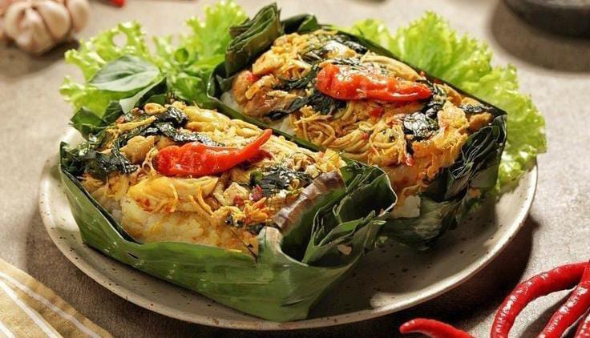
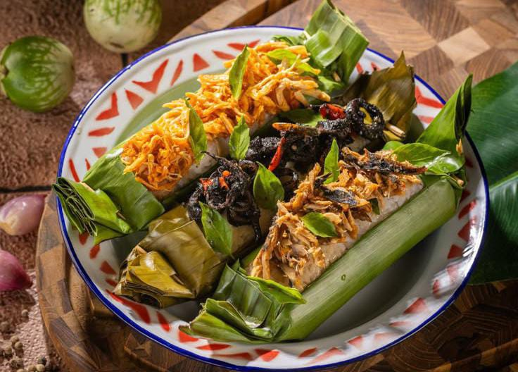

Indonesia dikenal sebagai surganya kuliner karena memiliki keragaman rasa dari berbagai daerah. Setiap masakan mencerminkan budaya, sejarah, dan kekayaan alam nusantara. Dari pedasnya rendang hingga hangatnya kuah soto, semuanya menggugah selera dan kaya akan rempah-rempah.


